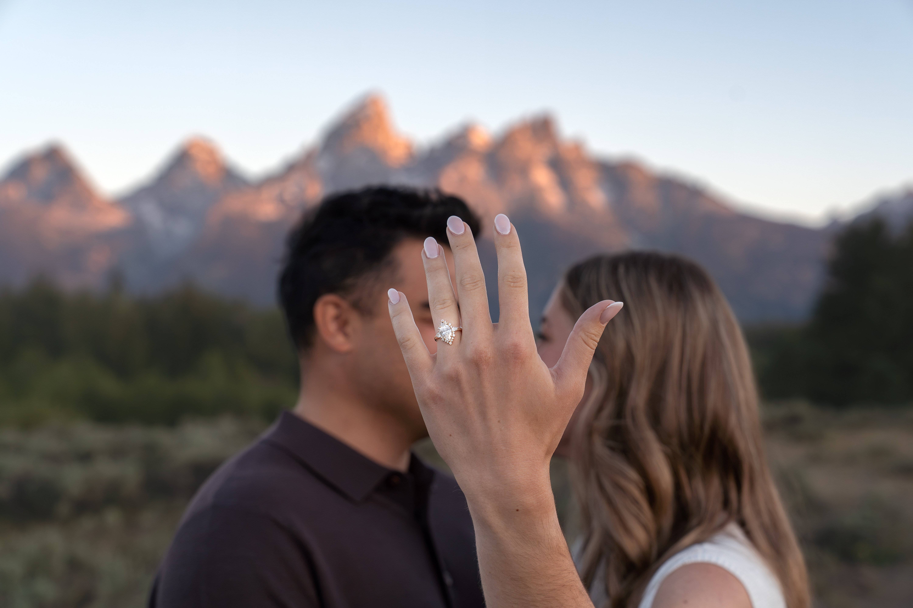
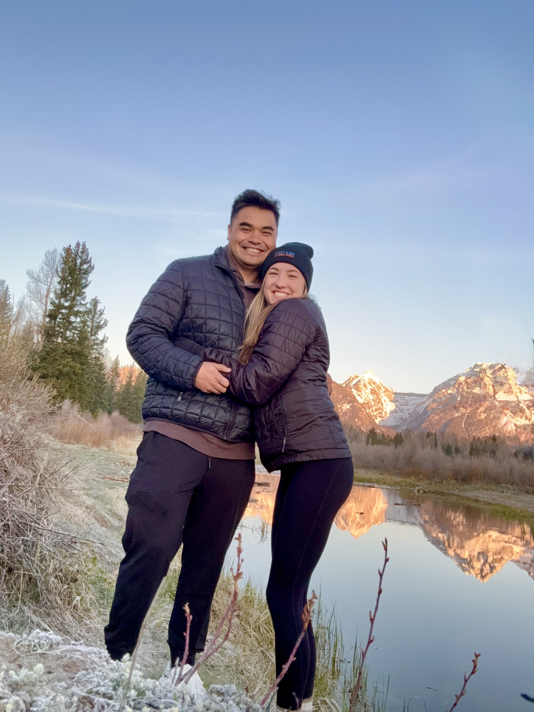
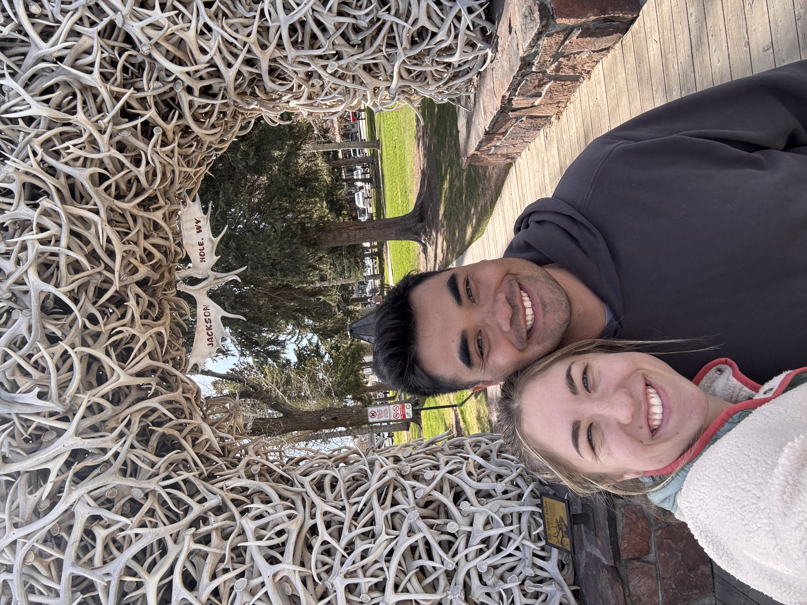
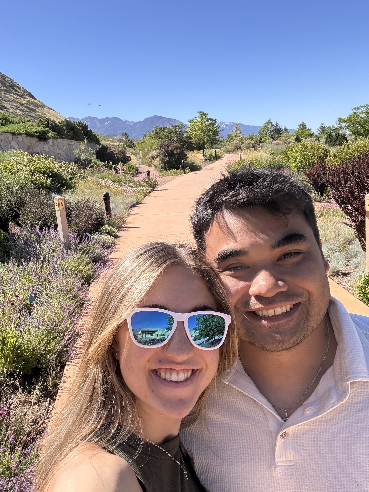
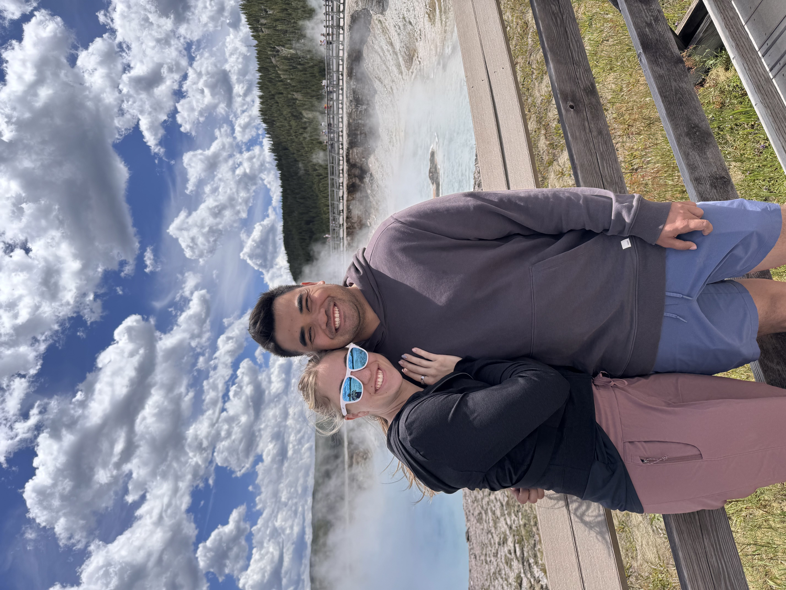
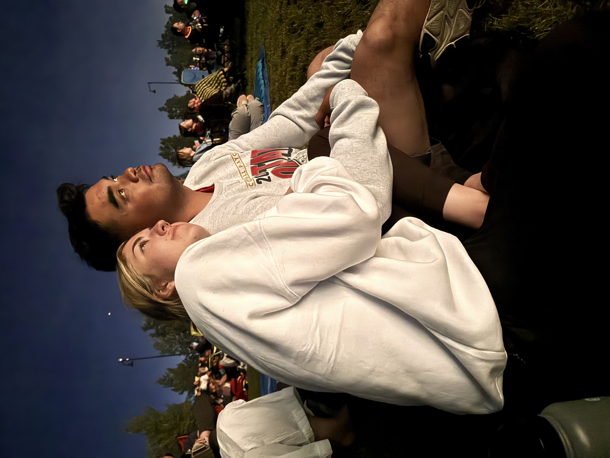

“I literally felt my heart skip a beat...she is gorgeous”
“I thought, ‘what would one date hurt?’”

It started, as the best ones often do, with a little nudge from a good friend. Mara was in Zack's chair getting her hair done, telling him she was single, unsure what was next, and half seriously entertaining the idea of moving to Texas to find a guy. Through a series of conversations that week, Zack thought Mara and Daryl might hit it off.
The next day, while Mara was hanging out with Zack's wife, Erika, he casually floated the idea: there's this guy named Daryl, he'd love to take you on a date, here's a photo. Mara was hesitant. Then she thought, "what can it hurt?"
That Thursday, Daryl picked her up for dinner. It was the end of March, and it was snowing because Idaho has a flair for the dramatic. They went to Smokin' Fins, had a lovely dinner, and the conversation never stopped. Genuine, intentional, and the kind you don't want to end. Neither of them wanted the night to be over.
And then they just kept talking... and seeing each other... Every single day since. Things moved quickly, not because they were rushing, but because life together was clear and purposeful in a way that's rare and worth running toward. The laughter came easy, the love came easier, and before long, it was obvious. Mara wasn't moving to Texas. And some might say that's huge for the program.
Our Adventures






